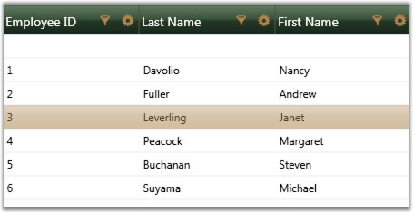
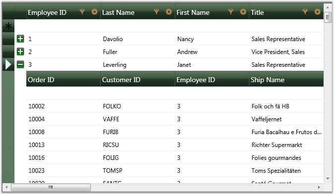

It is possible to define your own visual style for the Grid Data control. As a first step, you need to define a custom style by deriving from the IGridDataVisualStyle interface, and by defining custom brushes for various grid elements. The following code illustrates this:
You should direct the grid to use this custom style by specifying Custom option in its VisualStyle property. This can be done by using the following code:
|
[C#]
this.dataGrid.CustomVisualStyle = new GridDataGlassyGreenStyle(); this.dataGrid.VisualStyle = VisualStyle.Custom; |
The following screen shot shows the custom visual style set for the grid using the above given code:

Figure 164: Grid applied with Custom Visual Style
Custom Visual Style can be defined for nested tables too. The following code illustrates this:
|
[XAML]
<Window.Resources> <ObjectDataProvider x:Key="CustomerTable" MethodName="GetDataTable" ObjectType="{x:Type local:Data}" /> <CollectionViewSource x:Key="orderSource" Source="{StaticResource CustomerTable}" > </CollectionViewSource> <local:GridDataVisualStyleConverter x:Key="styleConverter" /> <ObjectDataProvider x:Key="GreenStyle" ObjectType="{x:Type local:GridDataGlassyGreenStyle}"/> </Window.Resources> <syncfusion:GridDataControl x:Name="dataGrid" ShowRowHeader="True" ShowColumnOptions="True" ShowGroupDropArea="True" ShowFilters="True" AutoPopulateColumns="True" AutoPopulateRelations="False" ItemsSource="{StaticResource orderSource}"> <syncfusion:GridDataControl.Relations > <syncfusion:GridDataRelation RelationalColumn="Employee_Orders" RelationType="MasterDetails" > <syncfusion:GridDataRelation.TableProperties> <syncfusion:GridDataTableProperties CustomVisualStyle="{Binding Source={StaticResource GreenStyle}, Converter={StaticResource styleConverter}}" VisualStyle="Custom" AutoPopulateColumns="True"> </syncfusion:GridDataTableProperties> </syncfusion:GridDataRelation.TableProperties> </syncfusion:GridDataRelation> </syncfusion:GridDataControl.Relations> </syncfusion:GridDataControl> |

Figure 165: Custom Visual Style for nested grid
Note: IGridDataVisualStyle is deprecated and this information is provided only for legacy reasons. The recommended approach for customizing the GridDataControl is using GridDataStyleManager class through Microsoft Expression Blend.